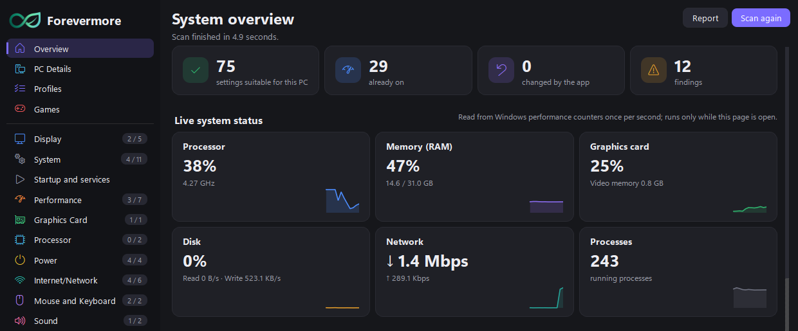
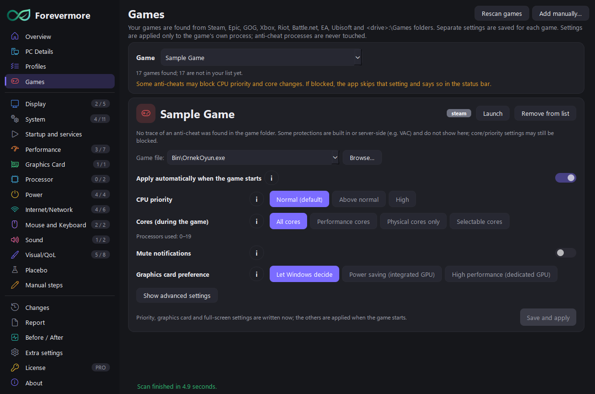
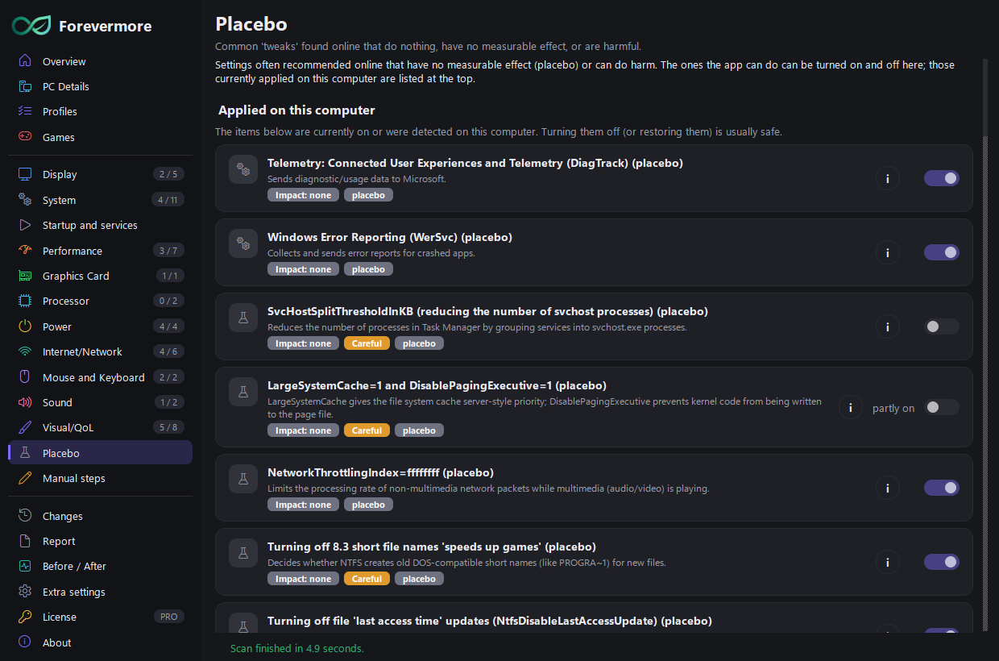

No placebo. Settings that actually work.
Forevermore is a Windows settings app for gamers. It scans your PC, explains what each setting does with its pros and cons, and flags the placebo and harmful tweaks that circulate online. Every change is backed up and can be undone with one click.
Windows 10 / 11 · 64-bit · English and Turkish

What it does
Based on my own tests and measurements and on Microsoft, NVIDIA and AMD documentation. A tweak with no proven effect is never sold as "more FPS".
Scan and explain
Scans your hardware and current settings read-only and explains in plain words what each setting does and who should not touch it.
Placebo and harmful tweaks
Shows popular tweaks that do nothing or cause harm ("lowers ping", "frees RAM") separately, and finds the ones already applied on your PC.
Everything can be undone
A backup and a restore point are made before any change. Go back with one click on the Changes page.
Graphics card settings
Changes NVIDIA and AMD driver settings (latency, scaling, G-SYNC) through the driver's own interface.
Game profilesPRO
Per-game CPU priority, core selection and muted notifications; applied when the game starts and undone when it closes.
Before / AfterPRO
See the real effect with FPS, latency and timer measurements before and after your changes.


Pricing
Start with the free version. Pro is a monthly subscription; each subscription works on one computer and can be cancelled at any time.
Free
- Scan, PC Details and Report
- All setting explanations and guides
- 5 setting changes at a time
- Undo is always free
Forevermore Pro
- Unlimited setting changes
- Profiles (one-click setting bundles)
- Game profiles with automatic apply
- Before / After measurement
- 1 computer · cancel any time
Payment, invoices and taxes are handled by our reseller Lemon Squeezy. Subscription: manage subscription · refund policy
If you like the project, you can support it on Buy Me a Coffee.
Download and verify
Download Forevermore only from this site. Copies from elsewhere may have been modified.
Extract the zip to a folder and run Forevermore.exe. In a genuine copy the app's About page says
"Original copy" and the signature fingerprint is: 5FE5-D786-0B89-A56E
SHA-256 of the zip: —
FAQ
Can it harm my computer?
A backup and a Windows restore point are made before any change; risky settings ask with two separate warnings. You can undo everything with one click on the Changes page.
Does it connect to the internet or collect data?
No telemetry; scan results never leave your computer. Only when a Pro license is verified are the license key and an anonymous computer ID sent. Details: Privacy.
On how many computers can I use Pro?
Each subscription works on one computer. When you switch computers, choose License > "Remove from this computer" on the old one and enter the key on the new one.
What happens when the subscription ends?
The app goes back to the free version. Your changes stay in place and can be undone at any time.
My antivirus or Windows SmartScreen shows a warning.
This is common for new, unsigned programs. Compare the zip's SHA-256 and the signature fingerprint in the app with the values above; if they match, the file is exactly as published here.